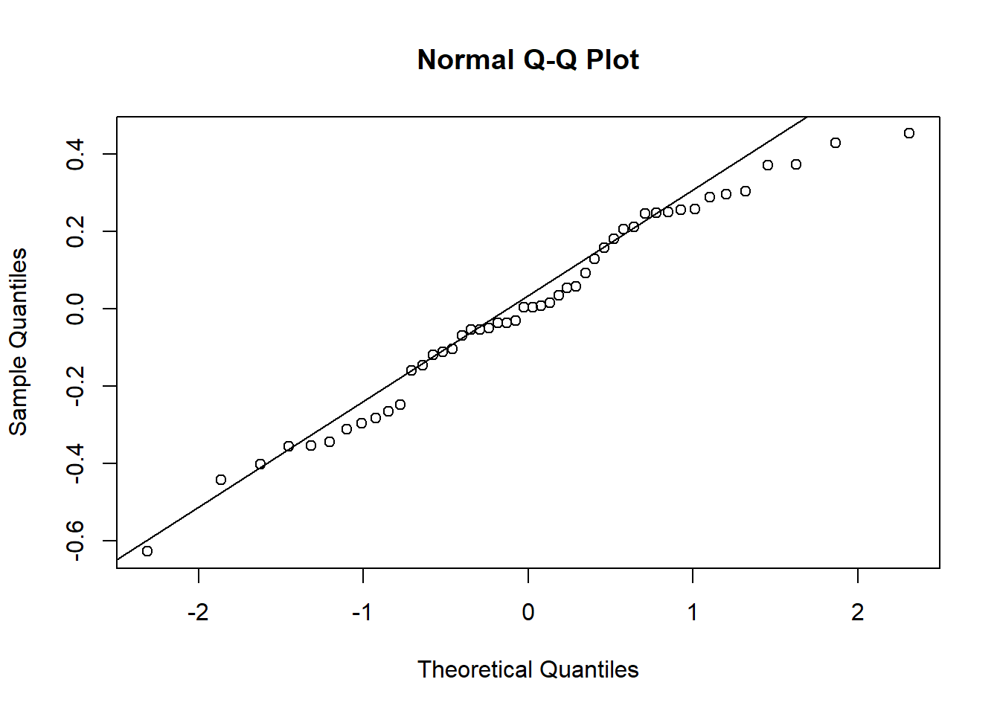

library(gsheet)
library(tidyverse)
library(ggthemes)
library(lme4)
library(Matrix)
library(car)
library(performance)
library(DHARMa)
library(emmeans)
library(multcomp)
library(r4pde)
library(broom)aula_09
Aula 09 - 15/05/2024
Pacotes
milho <- gsheet2tbl("https://docs.google.com/spreadsheets/d/1bq2N19DcZdtax2fQW9OHSGMR0X2__Z9T/edit#gid=1345524759")
milho# A tibble: 48 × 5
hybrid block method index yield
<chr> <dbl> <chr> <dbl> <dbl>
1 30F53 HX 1 pin 21.1 12920
2 30F53 HX 2 pin 21.1 9870
3 30F53 HX 3 pin 23.3 8920
4 30F53 HX 4 pin 35.6 13120
5 30F53 YH 1 pin 21.1 12060
6 30F53 YH 2 pin 22.2 7860
7 30F53 YH 3 pin 27.3 7410
8 30F53 YH 4 pin 27.8 10300
9 30K64 1 pin 20 11700
10 30K64 2 pin 20 10700
# ℹ 38 more rowsEste experimento foi delineado em parcelas subdivididas. Foram formados 4 blocos. O híbrido foi aleatorizado dentro dos blocos. Temos o fator Híbrido e o fator bloco, que é um fator aleatório. Dentro de cada bloco temos o híbrido, e dentro dos híbridos temos os métodos de aplicação.
Temos duas opções: Lm ou Aov; ou utilizar o modelo misto (um fator fixo e um aleatório neste modelo).
Visualizar Index
plot1 <- milho |>
ggplot(aes(method, index))+
geom_jitter(width = 0.1, alpha = 0.2)+
facet_wrap( ~ hybrid)+
stat_summary(fun.data = "mean_cl_boot", color = "black", size = 0.5)+
theme_classic()
plot1Modelo para parcela subdividida
milho2 <- milho |>
mutate(block = as.factor(block))
mix2 <- lmer(index ~ hybrid*method + block + (1 | block/hybrid), data = milho2)
Anova(mix2)Analysis of Deviance Table (Type II Wald chisquare tests)
Response: index
Chisq Df Pr(>Chisq)
hybrid 15.5971 5 0.008094 **
method 4.6963 1 0.030228 *
block 0.2157 3 0.975023
hybrid:method 15.8060 5 0.007420 **
---
Signif. codes: 0 '***' 0.001 '**' 0.01 '*' 0.05 '.' 0.1 ' ' 1No fator aleatório, colocamos o hibrido dentro do bloco. ( 1 | block/hybrid)
Comparamos os híbridos nas linhas e os métodos nas colunas.
Testar as premissas
check_normality(mix2)OK: residuals appear as normally distributed (p = 0.635).check_heteroscedasticity(mix2)Warning: Heteroscedasticity (non-constant error variance) detected (p = 0.009).Normalidade ok, homogeneidade não atendeu. Procede-se a transformação para raiz quadrada.
mix2 <- lmer(sqrt(index) ~ hybrid*method + block + (1|block/hybrid), data = milho2)
mix2Linear mixed model fit by REML ['lmerMod']
Formula: sqrt(index) ~ hybrid * method + block + (1 | block/hybrid)
Data: milho2
REML criterion at convergence: 72.5662
Random effects:
Groups Name Std.Dev.
hybrid:block (Intercept) 0.4644
block (Intercept) 2.3536
Residual 0.3742
Number of obs: 48, groups: hybrid:block, 24; block, 4
Fixed Effects:
(Intercept) hybrid30F53 YH
4.65420 -0.04446
hybrid30K64 hybrid30S31H
-0.49224 1.09866
hybrid30S31YH hybridBG7049H
0.63521 -0.58990
methodsilk block2
-0.05317 0.06156
block3 block4
0.56679 0.73537
hybrid30F53 YH:methodsilk hybrid30K64:methodsilk
0.20604 0.16534
hybrid30S31H:methodsilk hybrid30S31YH:methodsilk
-0.91003 -0.43778
hybridBG7049H:methodsilk
0.01751
optimizer (nloptwrap) convergence code: 0 (OK) ; 0 optimizer warnings; 2 lme4 warnings Anova(mix2)Analysis of Deviance Table (Type II Wald chisquare tests)
Response: sqrt(index)
Chisq Df Pr(>Chisq)
hybrid 15.3159 5 0.009095 **
method 3.8886 1 0.048615 *
block 0.0718 3 0.994997
hybrid:method 13.3812 5 0.020057 *
---
Signif. codes: 0 '***' 0.001 '**' 0.01 '*' 0.05 '.' 0.1 ' ' 1plot(simulateResiduals(mix2))
qqnorm(residuals(mix2))
qqline(residuals(mix2))
hist(residuals(mix2))
check_normality(mix2)OK: residuals appear as normally distributed (p = 0.440).check_heteroscedasticity(mix2)OK: Error variance appears to be homoscedastic (p = 0.971).Depois de carregar o Emmeans
medias_milho <- emmeans(mix2,
~ hybrid | method,
type = "response")
medias_milhomethod = pin:
hybrid response SE df lower.CL upper.CL
30F53 HX 25.0 12.1 6084 6.84 54.4
30F53 YH 24.5 12.0 6084 6.61 53.7
30K64 20.3 10.9 6084 4.51 47.4
30S31H 37.1 14.8 6084 13.79 71.8
30S31YH 31.7 13.7 6084 10.57 64.2
BG7049H 19.4 10.7 6084 4.10 46.0
method = silk:
hybrid response SE df lower.CL upper.CL
30F53 HX 24.4 12.0 6084 6.56 53.6
30F53 YH 26.0 12.4 6084 7.42 56.0
30K64 21.3 11.2 6084 5.00 48.9
30S31H 26.3 12.5 6084 7.57 56.4
30S31YH 26.4 12.5 6084 7.62 56.5
BG7049H 19.1 10.6 6084 3.96 45.6
Results are averaged over the levels of: block
Degrees-of-freedom method: kenward-roger
Confidence level used: 0.95
Intervals are back-transformed from the sqrt scale medias_milho2 <- emmeans(mix2,
~ method | hybrid,
type = "response")
medias_milho2hybrid = 30F53 HX:
method response SE df lower.CL upper.CL
pin 25.0 12.1 6084 6.84 54.4
silk 24.4 12.0 6084 6.56 53.6
hybrid = 30F53 YH:
method response SE df lower.CL upper.CL
pin 24.5 12.0 6084 6.61 53.7
silk 26.0 12.4 6084 7.42 56.0
hybrid = 30K64:
method response SE df lower.CL upper.CL
pin 20.3 10.9 6084 4.51 47.4
silk 21.3 11.2 6084 5.00 48.9
hybrid = 30S31H:
method response SE df lower.CL upper.CL
pin 37.1 14.8 6084 13.79 71.8
silk 26.3 12.5 6084 7.57 56.4
hybrid = 30S31YH:
method response SE df lower.CL upper.CL
pin 31.7 13.7 6084 10.57 64.2
silk 26.4 12.5 6084 7.62 56.5
hybrid = BG7049H:
method response SE df lower.CL upper.CL
pin 19.4 10.7 6084 4.10 46.0
silk 19.1 10.6 6084 3.96 45.6
Results are averaged over the levels of: block
Degrees-of-freedom method: kenward-roger
Confidence level used: 0.95
Intervals are back-transformed from the sqrt scale cld(medias_milho2, Letters = letters)hybrid = 30F53 HX:
method response SE df lower.CL upper.CL .group
silk 24.4 12.0 6084 6.56 53.6 a
pin 25.0 12.1 6084 6.84 54.4 a
hybrid = 30F53 YH:
method response SE df lower.CL upper.CL .group
pin 24.5 12.0 6084 6.61 53.7 a
silk 26.0 12.4 6084 7.42 56.0 a
hybrid = 30K64:
method response SE df lower.CL upper.CL .group
pin 20.3 10.9 6084 4.51 47.4 a
silk 21.3 11.2 6084 5.00 48.9 a
hybrid = 30S31H:
method response SE df lower.CL upper.CL .group
silk 26.3 12.5 6084 7.57 56.4 a
pin 37.1 14.8 6084 13.79 71.8 b
hybrid = 30S31YH:
method response SE df lower.CL upper.CL .group
silk 26.4 12.5 6084 7.62 56.5 a
pin 31.7 13.7 6084 10.57 64.2 a
hybrid = BG7049H:
method response SE df lower.CL upper.CL .group
silk 19.1 10.6 6084 3.96 45.6 a
pin 19.4 10.7 6084 4.10 46.0 a
Results are averaged over the levels of: block
Degrees-of-freedom method: kenward-roger
Confidence level used: 0.95
Intervals are back-transformed from the sqrt scale
Note: contrasts are still on the sqrt scale
significance level used: alpha = 0.05
NOTE: If two or more means share the same grouping symbol,
then we cannot show them to be different.
But we also did not show them to be the same. Interpretação: significância da anova ou efeitos da interação; Realiza-se o teste de médias se há efeito; Comparamos a diferença dentro dos métodos, e depois, comparamos a diferença entre os métodos dentro dos híbridos.
mix3 <- lmer(sqrt(yield) ~ hybrid*method + block + (1|block/hybrid), data = milho2)
mix3Linear mixed model fit by REML ['lmerMod']
Formula: sqrt(yield) ~ hybrid * method + block + (1 | block/hybrid)
Data: milho2
REML criterion at convergence: 228.4958
Random effects:
Groups Name Std.Dev.
hybrid:block (Intercept) 6.804
block (Intercept) 3.381
Residual 3.264
Number of obs: 48, groups: hybrid:block, 24; block, 4
Fixed Effects:
(Intercept) hybrid30F53 YH
106.3573 -8.9894
hybrid30K64 hybrid30S31H
2.5090 -15.6047
hybrid30S31YH hybridBG7049H
-17.0172 3.6513
methodsilk block2
-5.8412 -6.1122
block3 block4
-0.8094 3.4947
hybrid30F53 YH:methodsilk hybrid30K64:methodsilk
4.6122 -0.5245
hybrid30S31H:methodsilk hybrid30S31YH:methodsilk
11.5228 8.2247
hybridBG7049H:methodsilk
9.9231
optimizer (nloptwrap) convergence code: 0 (OK) ; 0 optimizer warnings; 1 lme4 warnings Anova(mix3)Analysis of Deviance Table (Type II Wald chisquare tests)
Response: sqrt(yield)
Chisq Df Pr(>Chisq)
hybrid 25.5591 5 0.0001086 ***
method 0.0520 1 0.8196750
block 2.3606 3 0.5010021
hybrid:method 24.4985 5 0.0001741 ***
---
Signif. codes: 0 '***' 0.001 '**' 0.01 '*' 0.05 '.' 0.1 ' ' 1check_normality(mix3)OK: residuals appear as normally distributed (p = 0.214).check_heteroscedasticity(mix3)OK: Error variance appears to be homoscedastic (p = 0.686).Regressão linear
Trabalharemos com o conjunto estande. Coluna 1 - tratamento (percentual das sementes inoculadas com o patógeno), Coluna 2 - bloco, Coluna 3 - número de plantas emergidas.
Avalia o número de plantas infectadas pelo patógeno. Avalia a taxa de diminuição do estande com o aumento da inoculação do patógeno. Não são categorias. É uma variável quantitativa.
estande <- gsheet2tbl("https://docs.google.com/spreadsheets/d/1bq2N19DcZdtax2fQW9OHSGMR0X2__Z9T/edit#gid=401662555")Plotar o gráfico para visualização dos dados.
estande |>
ggplot(aes(trat, nplants, color ))+
geom_jitter(width = 0.1, alpha = 0.2)+
#facet_wrap(~exp)+
stat_summary(fun.data = "mean_cl_boot", color = "black", size = 0.5)+
theme_classic()+
geom_smooth(method = "lm", se = FALSE)Mostramos biologicamente que há redução do estande de plantas conforme o aumento da inoculação do patógeno. podemos assumir dois modelos: linear simples ou quadrático. Podemos verificar qual modelo se adequa melhor à regressão.
Regressão linear simples por experimento
Modelo linear
Experimento 1
Não rejeita-se a hipótese nula.
exp1 <- estande |>
filter(exp == 1)
exp1 |>
ggplot(aes(trat, nplants))+
geom_point()+
ylim(0,100)+
geom_smooth(method = "lm", se = F)
lm1 <- lm(nplants ~ trat,
data = exp1)
summary(lm1)
Call:
lm(formula = nplants ~ trat, data = exp1)
Residuals:
Min 1Q Median 3Q Max
-25.500 -6.532 1.758 8.573 27.226
Coefficients:
Estimate Std. Error t value Pr(>|t|)
(Intercept) 52.5000 4.2044 12.487 1.84e-11 ***
trat -0.2419 0.1859 -1.301 0.207
---
Signif. codes: 0 '***' 0.001 '**' 0.01 '*' 0.05 '.' 0.1 ' ' 1
Residual standard error: 15 on 22 degrees of freedom
Multiple R-squared: 0.07148, Adjusted R-squared: 0.02928
F-statistic: 1.694 on 1 and 22 DF, p-value: 0.2066Experimento 2
Rejeita-se a hipótese nula
exp2 <- estande |>
filter(exp == 2)
exp2 |>
ggplot(aes(trat, nplants))+
geom_point()+
ylim(0,100)+
geom_smooth(method = "lm", se = F)
lm2 <- lm(nplants ~ trat,
data = exp2)
summary(lm2)
Call:
lm(formula = nplants ~ trat, data = exp2)
Residuals:
Min 1Q Median 3Q Max
-25.7816 -7.7150 0.5653 8.1929 19.2184
Coefficients:
Estimate Std. Error t value Pr(>|t|)
(Intercept) 60.9857 3.6304 16.798 4.93e-14 ***
trat -0.7007 0.1605 -4.365 0.000247 ***
---
Signif. codes: 0 '***' 0.001 '**' 0.01 '*' 0.05 '.' 0.1 ' ' 1
Residual standard error: 12.95 on 22 degrees of freedom
Multiple R-squared: 0.4641, Adjusted R-squared: 0.4398
F-statistic: 19.05 on 1 and 22 DF, p-value: 0.0002473Experimento 3
Rejeita-se a hipótese nula.
Poderíamos trabalhar com o modelo logarítmico (transformando).
exp3 <- estande |>
filter(exp == 3)
exp3 |>
ggplot(aes(trat, nplants))+
geom_point()+
ylim(0,100)+
geom_smooth(method = "lm", se = F)
lm3 <- lm(nplants ~ trat,
data = exp3)
summary(lm3)
Call:
lm(formula = nplants ~ trat, data = exp3)
Residuals:
Min 1Q Median 3Q Max
-26.5887 -3.9597 0.7177 5.5806 19.8952
Coefficients:
Estimate Std. Error t value Pr(>|t|)
(Intercept) 95.7500 2.9529 32.425 < 2e-16 ***
trat -0.7634 0.1306 -5.847 6.97e-06 ***
---
Signif. codes: 0 '***' 0.001 '**' 0.01 '*' 0.05 '.' 0.1 ' ' 1
Residual standard error: 10.53 on 22 degrees of freedom
Multiple R-squared: 0.6085, Adjusted R-squared: 0.5907
F-statistic: 34.19 on 1 and 22 DF, p-value: 6.968e-06Usando GLM
Podemos atribuir o glm com distribuição normal ou distribuição de poisson (considerando que a distribuição não é normal).
Experimento 1
glm1 <- glm(nplants ~ trat, family = "gaussian",
data = exp1)
summary(glm1)
Call:
glm(formula = nplants ~ trat, family = "gaussian", data = exp1)
Coefficients:
Estimate Std. Error t value Pr(>|t|)
(Intercept) 52.5000 4.2044 12.487 1.84e-11 ***
trat -0.2419 0.1859 -1.301 0.207
---
Signif. codes: 0 '***' 0.001 '**' 0.01 '*' 0.05 '.' 0.1 ' ' 1
(Dispersion parameter for gaussian family taken to be 224.9751)
Null deviance: 5330.5 on 23 degrees of freedom
Residual deviance: 4949.5 on 22 degrees of freedom
AIC: 202
Number of Fisher Scoring iterations: 2AIC(glm1)[1] 202.0045Experimento 2
Neste caso, podemos assumir que o modelo linear foi melhor do que o modelo de poisson, devido à diferença de AIC
glm2 <- glm(nplants ~ trat, family = "gaussian",
data = exp2)
summary(glm2)
Call:
glm(formula = nplants ~ trat, family = "gaussian", data = exp2)
Coefficients:
Estimate Std. Error t value Pr(>|t|)
(Intercept) 60.9857 3.6304 16.798 4.93e-14 ***
trat -0.7007 0.1605 -4.365 0.000247 ***
---
Signif. codes: 0 '***' 0.001 '**' 0.01 '*' 0.05 '.' 0.1 ' ' 1
(Dispersion parameter for gaussian family taken to be 167.7464)
Null deviance: 6886.6 on 23 degrees of freedom
Residual deviance: 3690.4 on 22 degrees of freedom
AIC: 194.96
Number of Fisher Scoring iterations: 2AIC(glm2)[1] 194.9597glm2b <- glm <- glm(nplants ~ trat, family = "poisson",
data = exp2)
summary(glm2b)
Call:
glm(formula = nplants ~ trat, family = "poisson", data = exp2)
Coefficients:
Estimate Std. Error z value Pr(>|z|)
(Intercept) 4.134189 0.037583 110.003 < 2e-16 ***
trat -0.016270 0.002059 -7.901 2.76e-15 ***
---
Signif. codes: 0 '***' 0.001 '**' 0.01 '*' 0.05 '.' 0.1 ' ' 1
(Dispersion parameter for poisson family taken to be 1)
Null deviance: 139.783 on 23 degrees of freedom
Residual deviance: 69.578 on 22 degrees of freedom
AIC: 210.24
Number of Fisher Scoring iterations: 4AIC(glm2b)[1] 210.2353Experimento 3
Modelo linear. O modelo de poisson no exp 3 é melhor do que um modelo linear, comparando os valores de AIC.
glm3 <- glm(nplants ~ trat, family = "gaussian",
data = exp3)
summary(glm3)
Call:
glm(formula = nplants ~ trat, family = "gaussian", data = exp3)
Coefficients:
Estimate Std. Error t value Pr(>|t|)
(Intercept) 95.7500 2.9529 32.425 < 2e-16 ***
trat -0.7634 0.1306 -5.847 6.97e-06 ***
---
Signif. codes: 0 '***' 0.001 '**' 0.01 '*' 0.05 '.' 0.1 ' ' 1
(Dispersion parameter for gaussian family taken to be 110.9787)
Null deviance: 6235.8 on 23 degrees of freedom
Residual deviance: 2441.5 on 22 degrees of freedom
AIC: 185.04
Number of Fisher Scoring iterations: 2AIC(glm3)[1] 185.0449glm3b <- glm <- glm(nplants ~ trat, family = "poisson",
data = exp3)
summary(glm3b)
Call:
glm(formula = nplants ~ trat, family = "poisson", data = exp3)
Coefficients:
Estimate Std. Error z value Pr(>|z|)
(Intercept) 4.571590 0.029539 154.762 < 2e-16 ***
trat -0.009965 0.001488 -6.697 2.13e-11 ***
---
Signif. codes: 0 '***' 0.001 '**' 0.01 '*' 0.05 '.' 0.1 ' ' 1
(Dispersion parameter for poisson family taken to be 1)
Null deviance: 77.906 on 23 degrees of freedom
Residual deviance: 29.952 on 22 degrees of freedom
AIC: 183.93
Number of Fisher Scoring iterations: 4AIC(glm3b)[1] 183.9324Obs.: O professor alterou o modelo e considerou o experimento como fator aleatório, não como efeito fixo. Ainda assim, a melhor distribuição foi a distribuissão gaussiana (normal) usando um modelo linear generalizado. Como foi feito a seguir:
glm33 <- glmer(nplants ~ trat + (trat | exp), family = "gaussian",
data = estande)
summary(glm33)Linear mixed model fit by REML ['lmerMod']
Formula: nplants ~ trat + (trat | exp)
Data: estande
REML criterion at convergence: 580.8
Scaled residuals:
Min 1Q Median 3Q Max
-2.0988 -0.6091 0.1722 0.6360 1.9963
Random effects:
Groups Name Variance Std.Dev. Corr
exp (Intercept) 510.68405 22.5983
trat 0.05516 0.2349 -0.82
Residual 167.91303 12.9581
Number of obs: 72, groups: exp, 3
Fixed effects:
Estimate Std. Error t value
(Intercept) 69.7452 13.2146 5.278
trat -0.5687 0.1643 -3.462
Correlation of Fixed Effects:
(Intr)
trat -0.731
optimizer (nloptwrap) convergence code: 0 (OK)
Model failed to converge with max|grad| = 0.00274249 (tol = 0.002, component 1)AIC(glm33)[1] 592.8402glm33b <- glmer(nplants ~ trat + (trat | exp), family = poisson (link = "log"),
data = estande)
summary(glm33b)Generalized linear mixed model fit by maximum likelihood (Laplace
Approximation) [glmerMod]
Family: poisson ( log )
Formula: nplants ~ trat + (trat | exp)
Data: estande
AIC BIC logLik deviance df.resid
660.7 672.1 -325.4 650.7 67
Scaled residuals:
Min 1Q Median 3Q Max
-3.6247 -0.8083 0.1042 0.9601 3.6511
Random effects:
Groups Name Variance Std.Dev. Corr
exp (Intercept) 6.425e-02 0.253478
trat 1.602e-05 0.004003 -0.17
Number of obs: 72, groups: exp, 3
Fixed effects:
Estimate Std. Error z value Pr(>|z|)
(Intercept) 4.223397 0.147793 28.577 < 2e-16 ***
trat -0.010434 0.002538 -4.111 3.93e-05 ***
---
Signif. codes: 0 '***' 0.001 '**' 0.01 '*' 0.05 '.' 0.1 ' ' 1
Correlation of Fixed Effects:
(Intr)
trat -0.192AIC(glm33b)[1] 660.7282Outro exemplo
Carregar o pacote r4pde.
Predizer uma resposta em relação à outra. Duas respostas numéricas contínuas, ajustanto o modelo linear ou não. Muitos estudos diferentes, gráfico geral. A saída dos gráficos mostra que com a ação do fungicida e redução da severidade acontece um incremento de produtividade da soja.
wm <- WhiteMoldSoybean
wm |>
ggplot(aes(inc, yld))+
geom_point()+
facet_wrap(~ study)+
theme_minimal()+
geom_smooth(method = "lm", se = F)
Modelo LMG
O 3299 é a produtividade por ha quando não há controle. O 9,261 indica a redução de produtividade em kg/ha de acordo com o aumento da severidade.
mofo1 <- lm(yld ~ inc,
data = wm)
summary(mofo1)
Call:
lm(formula = yld ~ inc, data = wm)
Residuals:
Min 1Q Median 3Q Max
-1657.85 -594.50 -91.32 531.76 1693.15
Coefficients:
Estimate Std. Error t value Pr(>|t|)
(Intercept) 3299.619 56.451 58.451 < 2e-16 ***
inc -9.261 2.108 -4.393 1.45e-05 ***
---
Signif. codes: 0 '***' 0.001 '**' 0.01 '*' 0.05 '.' 0.1 ' ' 1
Residual standard error: 745.8 on 380 degrees of freedom
Multiple R-squared: 0.04833, Adjusted R-squared: 0.04582
F-statistic: 19.3 on 1 and 380 DF, p-value: 1.452e-05Agrupando todos os estudos em um único gráfico.
Mofo 1
wm |>
ggplot(aes(inc, yld, group = factor(study)))+
geom_point()+
#facet_wrap(~ study)+
theme_minimal()+
geom_smooth(method = "lm", se = F)
mofo1 <- lm(yld ~ inc,
data = wm)
summary(mofo1)
Call:
lm(formula = yld ~ inc, data = wm)
Residuals:
Min 1Q Median 3Q Max
-1657.85 -594.50 -91.32 531.76 1693.15
Coefficients:
Estimate Std. Error t value Pr(>|t|)
(Intercept) 3299.619 56.451 58.451 < 2e-16 ***
inc -9.261 2.108 -4.393 1.45e-05 ***
---
Signif. codes: 0 '***' 0.001 '**' 0.01 '*' 0.05 '.' 0.1 ' ' 1
Residual standard error: 745.8 on 380 degrees of freedom
Multiple R-squared: 0.04833, Adjusted R-squared: 0.04582
F-statistic: 19.3 on 1 and 380 DF, p-value: 1.452e-05Obs.: Código muito importante para agrupar vários experimentos. Já detalha as médias para cada variável resposta.
fit_all <- wm |>
group_by(study) |>
do(tidy(lm(.$yld ~ .$inc), conf.int = TRUE))
fit_all# A tibble: 70 × 8
# Groups: study [35]
study term estimate std.error statistic p.value conf.low conf.high
<dbl> <chr> <dbl> <dbl> <dbl> <dbl> <dbl> <dbl>
1 1 (Intercept) 3329. 86.8 38.3 4.60e-13 3138. 3520.
2 1 .$inc -14.2 2.08 -6.85 2.78e- 5 -18.8 -9.64
3 2 (Intercept) 2682. 48.6 55.2 8.55e-15 2575. 2789.
4 2 .$inc -6.93 1.49 -4.66 6.89e- 4 -10.2 -3.66
5 3 (Intercept) 4017. 61.6 65.2 1.37e-15 3882. 4153.
6 3 .$inc -18.6 1.71 -10.9 3.11e- 7 -22.4 -14.9
7 4 (Intercept) 2814. 151. 18.6 1.15e- 9 2481. 3147.
8 4 .$inc -43.5 16.8 -2.58 2.56e- 2 -80.5 -6.38
9 5 (Intercept) 3317. 234. 14.2 2.07e- 8 2802. 3832.
10 5 .$inc -21.2 5.69 -3.72 3.36e- 3 -33.7 -8.67
# ℹ 60 more rowsMofo 2
mofo2 <- wm |>
group_by(study) |>
do(tidy(lm(.$yld ~ .$inc), conf.int = TRUE))
mofo2# A tibble: 70 × 8
# Groups: study [35]
study term estimate std.error statistic p.value conf.low conf.high
<dbl> <chr> <dbl> <dbl> <dbl> <dbl> <dbl> <dbl>
1 1 (Intercept) 3329. 86.8 38.3 4.60e-13 3138. 3520.
2 1 .$inc -14.2 2.08 -6.85 2.78e- 5 -18.8 -9.64
3 2 (Intercept) 2682. 48.6 55.2 8.55e-15 2575. 2789.
4 2 .$inc -6.93 1.49 -4.66 6.89e- 4 -10.2 -3.66
5 3 (Intercept) 4017. 61.6 65.2 1.37e-15 3882. 4153.
6 3 .$inc -18.6 1.71 -10.9 3.11e- 7 -22.4 -14.9
7 4 (Intercept) 2814. 151. 18.6 1.15e- 9 2481. 3147.
8 4 .$inc -43.5 16.8 -2.58 2.56e- 2 -80.5 -6.38
9 5 (Intercept) 3317. 234. 14.2 2.07e- 8 2802. 3832.
10 5 .$inc -21.2 5.69 -3.72 3.36e- 3 -33.7 -8.67
# ℹ 60 more rowsdf<- mofo2 |>
filter(term == ".$inc")
mean(df$estimate)[1] -19.52932#Histograma da produtividade quando incidência é 0
library(cowplot)
p1 <- mofo2 |>
filter(term == "(Intercept)") |>
ggplot(aes(x = estimate))+
geom_histogram(bins = 8, color = "white", fill = "gray")+
theme_r4pde()+
labs(x = "Intercept", y = "frequency")
p2 <- mofo2 |>
filter(term == ".$inc") |>
ggplot(aes(x = estimate))+
geom_histogram(bins = 8, color = "white", fill = "gray")+
theme_r4pde()+
labs(x = "Slopes", y = "frequency")
library(patchwork)
p1+p2
Mofo 3
Modelo misto.
mofo3 <- lmer(yld ~ inc + (inc | study), data = wm,
REML = F)
summary(mofo3)Linear mixed model fit by maximum likelihood ['lmerMod']
Formula: yld ~ inc + (inc | study)
Data: wm
AIC BIC logLik deviance df.resid
5319.4 5343.1 -2653.7 5307.4 376
Scaled residuals:
Min 1Q Median 3Q Max
-3.7078 -0.5991 -0.0295 0.5077 3.2364
Random effects:
Groups Name Variance Std.Dev. Corr
study (Intercept) 557573.08 746.708
inc 36.85 6.071 -0.29
Residual 37228.73 192.947
Number of obs: 382, groups: study, 35
Fixed effects:
Estimate Std. Error t value
(Intercept) 3455.432 128.063 26.98
inc -17.236 1.451 -11.88
Correlation of Fixed Effects:
(Intr)
inc -0.300
optimizer (nloptwrap) convergence code: 0 (OK)
Model failed to converge with max|grad| = 0.416806 (tol = 0.002, component 1)library(lme4)
mofo3 <- lmer(yld ~ inc + (inc|study), data = wm, REML = F)
summary(mofo3)Linear mixed model fit by maximum likelihood ['lmerMod']
Formula: yld ~ inc + (inc | study)
Data: wm
AIC BIC logLik deviance df.resid
5319.4 5343.1 -2653.7 5307.4 376
Scaled residuals:
Min 1Q Median 3Q Max
-3.7078 -0.5991 -0.0295 0.5077 3.2364
Random effects:
Groups Name Variance Std.Dev. Corr
study (Intercept) 557573.08 746.708
inc 36.85 6.071 -0.29
Residual 37228.73 192.947
Number of obs: 382, groups: study, 35
Fixed effects:
Estimate Std. Error t value
(Intercept) 3455.432 128.063 26.98
inc -17.236 1.451 -11.88
Correlation of Fixed Effects:
(Intr)
inc -0.300
optimizer (nloptwrap) convergence code: 0 (OK)
Model failed to converge with max|grad| = 0.416806 (tol = 0.002, component 1)#Esta estimativa é muito mais confiável
# Inc do efeito fico sendo -17 é mais confiável, os outros métodos subestimam os valores
#A incidência está causando uma redução na produtividade de -17kg (à medida que a incidência aumenta, a produtividade diminui em 17kg)
Anova(mofo3)Analysis of Deviance Table (Type II Wald chisquare tests)
Response: yld
Chisq Df Pr(>Chisq)
inc 141.09 1 < 2.2e-16 ***
---
Signif. codes: 0 '***' 0.001 '**' 0.01 '*' 0.05 '.' 0.1 ' ' 1wm <- WhiteMoldSoybean
wm |>
ggplot(aes(inc, yld)) +
geom_point() +
#facet_wrap(~ study) +
theme_minimal() +
geom_smooth(method = 'lm', se = T)
mofo1 <- lm(yld ~ inc, data = wm)
summary(mofo1)
Call:
lm(formula = yld ~ inc, data = wm)
Residuals:
Min 1Q Median 3Q Max
-1657.85 -594.50 -91.32 531.76 1693.15
Coefficients:
Estimate Std. Error t value Pr(>|t|)
(Intercept) 3299.619 56.451 58.451 < 2e-16 ***
inc -9.261 2.108 -4.393 1.45e-05 ***
---
Signif. codes: 0 '***' 0.001 '**' 0.01 '*' 0.05 '.' 0.1 ' ' 1
Residual standard error: 745.8 on 380 degrees of freedom
Multiple R-squared: 0.04833, Adjusted R-squared: 0.04582
F-statistic: 19.3 on 1 and 380 DF, p-value: 1.452e-05fit_all <- wm |>
group_by(study) |>
do(tidy(lm(.$yld ~ .$inc), conf.int = T))
fit_all# A tibble: 70 × 8
# Groups: study [35]
study term estimate std.error statistic p.value conf.low conf.high
<dbl> <chr> <dbl> <dbl> <dbl> <dbl> <dbl> <dbl>
1 1 (Intercept) 3329. 86.8 38.3 4.60e-13 3138. 3520.
2 1 .$inc -14.2 2.08 -6.85 2.78e- 5 -18.8 -9.64
3 2 (Intercept) 2682. 48.6 55.2 8.55e-15 2575. 2789.
4 2 .$inc -6.93 1.49 -4.66 6.89e- 4 -10.2 -3.66
5 3 (Intercept) 4017. 61.6 65.2 1.37e-15 3882. 4153.
6 3 .$inc -18.6 1.71 -10.9 3.11e- 7 -22.4 -14.9
7 4 (Intercept) 2814. 151. 18.6 1.15e- 9 2481. 3147.
8 4 .$inc -43.5 16.8 -2.58 2.56e- 2 -80.5 -6.38
9 5 (Intercept) 3317. 234. 14.2 2.07e- 8 2802. 3832.
10 5 .$inc -21.2 5.69 -3.72 3.36e- 3 -33.7 -8.67
# ℹ 60 more rowsfit_all.interc <- fit_all |>
filter(term == "(Intercept)")
p1 <- fit_all.interc |>
ggplot(aes(x = estimate)) +
geom_histogram(bins = 8) +
theme_clean() +
labs(x = 'Intercept')
fit_all.inc <- fit_all |>
filter(term == ".$inc")
p2 <- fit_all.inc |>
ggplot(aes(x = estimate)) +
geom_histogram(bins = 8) +
theme_clean() +
labs(x = 'Incidence')
p1 + p2mofo3 <- lmer(yld ~ inc + (inc|study), data = wm, REML = F)
summary(mofo3)Linear mixed model fit by maximum likelihood ['lmerMod']
Formula: yld ~ inc + (inc | study)
Data: wm
AIC BIC logLik deviance df.resid
5319.4 5343.1 -2653.7 5307.4 376
Scaled residuals:
Min 1Q Median 3Q Max
-3.7078 -0.5991 -0.0295 0.5077 3.2364
Random effects:
Groups Name Variance Std.Dev. Corr
study (Intercept) 557573.08 746.708
inc 36.85 6.071 -0.29
Residual 37228.73 192.947
Number of obs: 382, groups: study, 35
Fixed effects:
Estimate Std. Error t value
(Intercept) 3455.432 128.063 26.98
inc -17.236 1.451 -11.88
Correlation of Fixed Effects:
(Intr)
inc -0.300
optimizer (nloptwrap) convergence code: 0 (OK)
Model failed to converge with max|grad| = 0.416806 (tol = 0.002, component 1)Anova(mofo3) # para obter o valor pAnalysis of Deviance Table (Type II Wald chisquare tests)
Response: yld
Chisq Df Pr(>Chisq)
inc 141.09 1 < 2.2e-16 ***
---
Signif. codes: 0 '***' 0.001 '**' 0.01 '*' 0.05 '.' 0.1 ' ' 1confint(mofo3, method = 'Wald') # para o calcular o IC 2.5 % 97.5 %
.sig01 NA NA
.sig02 NA NA
.sig03 NA NA
.sigma NA NA
(Intercept) 3204.43403 3706.43096
inc -20.08046 -14.39219